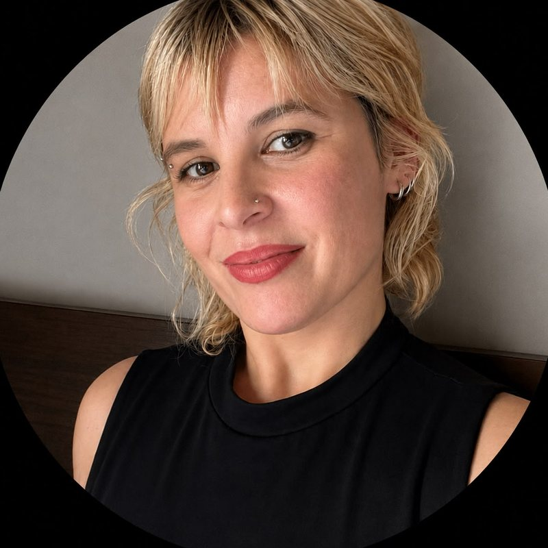

Gestión de operaciones y documentación
Gestión naval integral
Aplicación para organizar procesos administrativos, documentación y seguimiento de tareas en un entorno naval.
Ver repositorioPython, n8n, sistemas de gestión y mucha curiosidad. Acá reúno lo que construyo: automatizaciones, sistemas y juegos.

Aplicación para organizar procesos administrativos, documentación y seguimiento de tareas en un entorno naval.
Ver repositorioProyecto de automatización de tickets de soporte con n8n e inteligencia artificial.
Ver repositorioConvierte contenido escrito en carruseles listos para Instagram (1080×1350) y evita repetir temas con un detector automático.
Ver repositorio
Juego arcade web de estética pixel, con tres niveles, jefa final y controles para PC y celular.
Ver repositorioSoy programadora y docente de programación en Coding Giants, donde enseño a chicos y adolescentes con herramientas como Python, C# y Scratch. También trabajo en operaciones de entrada de datos y gestión administrativa en Taller Naval Angulo. Me considero versátil y resolutiva: me gusta entender un problema y encontrar la herramienta justa para resolverlo, sea un sistema de gestión, una automatización o un juego. Me apasiona aprender y probar lo nuevo que va apareciendo, y este espacio reúne parte de lo que fui construyendo.
Técnica Universitaria en Tecnologías de la Programación (UPSO). Formación pedagógica en etapa de finalización.